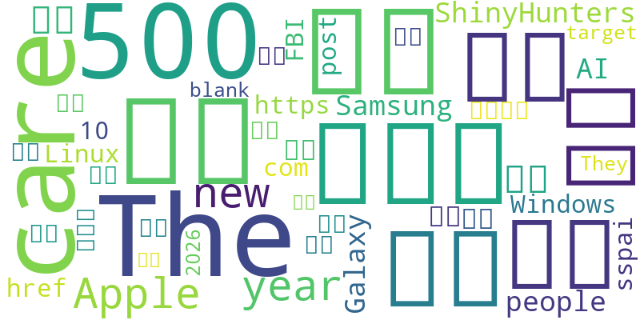

延伸思考：面对未知世界，人类是否应该继续勇于探索？
事件：Windows 11开始原生支持Linux容器，推动软件生态发展。
延伸思考：如何理解操作系统对新技术的接纳和融合对社会发展的影响？
事件：日本老龄化问题加剧，一人家庭比例首次超过4成。
延伸思考：老龄化社会对个人、家庭以及国家政策会带来哪些影响？
事件：美国联邦调查局(FBI)与荷兰合作成功逮捕网络犯罪组织ShinyHunters的领导成员。
延伸思考：网络犯罪的全球性特点如何促使各国加强合作，共同打击犯罪？
事件：加州立法禁止公职人员发行模因币，以保护投资者权益。
本周新闻周报总结了本周的热点新闻，以及从这些新闻中提炼出的作文素材。希望这份周报能为同学们提供有价值的阅读和写作素材，帮助大家在高考作文中写出有深度、有广度的文章。